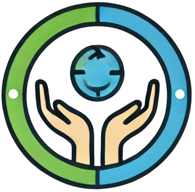

Comunidad Conectada
 (+55) 2299 6212 Soporte
(+55) 2299 6212 Soporte
(+55) 2299 6212 Soporte
(+55) 2299 6212 Soporte
En Comunidad Conectada, creemos en el poder del consumo local. Apoyar a los pequeños productores fomenta el desarrollo de la economía local y garantiza que los alimentos frescos lleguen a precios accesibles a las familias vulnerables. Promover el consumo local ayuda a mejorar la seguridad alimentaria y a fortalecer nuestras comunidades.
El apoyo a los productores locales fortalece la economía comunitaria, promueve la sostenibilidad y asegura que todos tengamos acceso a alimentos saludables y frescos.

Precio: $20/kg

Precio: $15/litro

Precio: $50/kg
Aprovecha nuestras ofertas especiales para las familias más vulnerables. Estas promociones ayudan a garantizar que todos tengan acceso a alimentos de calidad a precios asequibles.

Productora de frutas y verduras orgánicas. María cree en el poder de los alimentos frescos para mejorar la salud de la comunidad.

Ganadero local que produce leche de cabra y quesos frescos. Juan trabaja con dedicación para ofrecer productos de alta calidad.
Consumir productos locales ayuda a reducir la huella de carbono y contribuye a la sostenibilidad ambiental. Al comprar productos cercanos, reducimos la necesidad de transporte y apoyamos prácticas más sostenibles.
Cada compra que realizas ayuda a mantener la estabilidad financiera de los pequeños productores y fomenta el crecimiento de nuestra comunidad. Tu apoyo marca la diferencia.